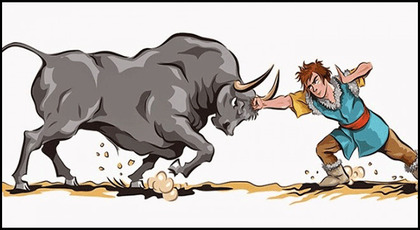

Dirse Han Oğlu Boğaç Han

Bayındır Han’ın hükmettiği halkına her sene düzenlediği şölene giden Dirse Han’ın çocuğu olmadığı için Kara Otağa (Kara çadır) oturtulması ile başlar. Sonrasında ise Dirse Han’ın karşılanma sırasındaki duygu ve düşünceleri ile daha sonra doğan oğlu Boğaç Han’ın kahramanlıkları anlatılan Dede Korkut hikâyesidir.
Bayındır Han yönettiği halkı için her sene büyük şölen düzenlermiş. Bu şölenlerin birinde gelecek konukları için üç ayrı çadır hazırlanmasını ve konukların bu çadırlarda ağırlanmasını emretmiş. Bunlar Ak, Kızıl ve Kara çadırlarmış. Ak çadırda oğlan çocuğu olanlar, Kızıl çadırda kız çocuğu olanlar, Kara çadır ise hiç çocuğu olmayan konuklar içinmiş. Bayındır Han çocuk sahibi olmayan kişileri Tanrının lanetledikleri olarak görürmüş. Dirse Han’ın ise çocuğu yokmuş. Yanındaki 40 adamıyla geldiği için bu davranış zoruna gitmiş ve hanımına hesap sormaya karar vermiş. Hanımından hesap sorarken kendini öğüt dinlerken bulmuş. Ama öğüdü de tutmuş ve büyük yemek düzenlemiş. İnsanlara yardım etmiş, hayır dualarını almış. Sonunda sağlıklı bir oğlu olmuş. Oğlan büyümüş ve Bayındır Han tarafından düzenlenen bir şölende ipinden kurtulan büyük boğasıyla güreşmiş. Kuvvetli yumruğuyla boğayı dizginlemiş ve yenmiş. Bu yiğitliği ile nam kazanıp Dede Korkut’un iltifatını kazanmış ve adı Boğaç han olmuş. Oğluyla gurur duyan babası tarafından da ödüllendirilmiş. Bunu kıskanan babasının 40 adamı fesatlıkla babasına Boğaç Han’ı kötülerler. Bir av düzenlenmiş ve o sırada türlü oyunlarla Boğaç Han’ı babasının vurmasını sağlamışlar. Annesinin sütü ve dağ çiçeği Boğaç Hanın yarasına derman olur ve iyileşir. Boğaç Han’ın iyileşmesinden ve kendilerinden öç almasından korkan 40 hain, Boğaç Han’ın babasını da zorla yanlarına alarak kaçmış. Yanına 40 yiğit alarak kaçırılan babasını kurtarmaya giden Boğan Han hainleri yenip babasını kurtarmış. Kendisini kurtaran Boğaç Han’a babası Dirse Han taht vermiş ve bu destansı hikaye de böylece sona ermiş.